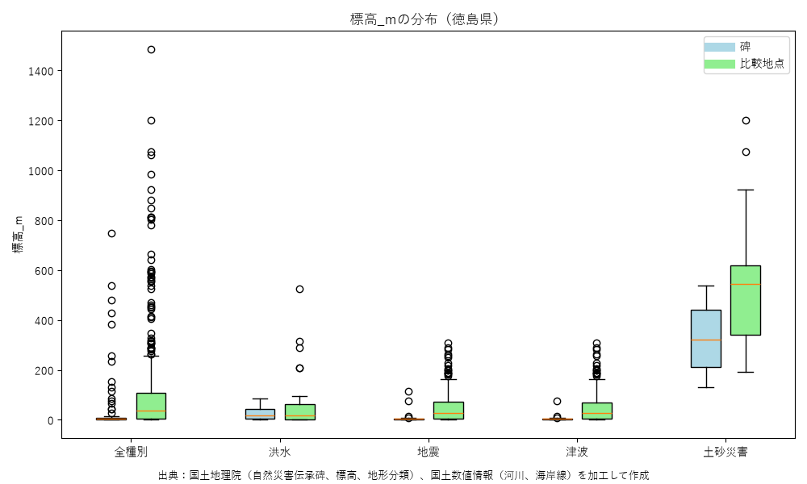
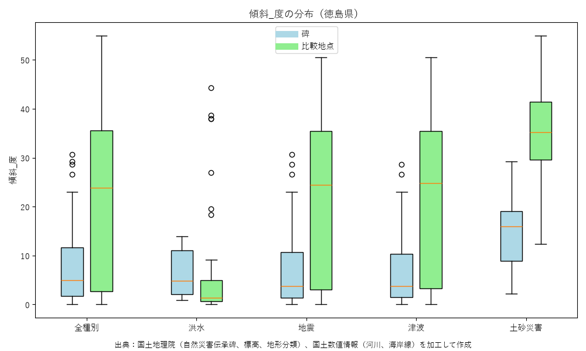
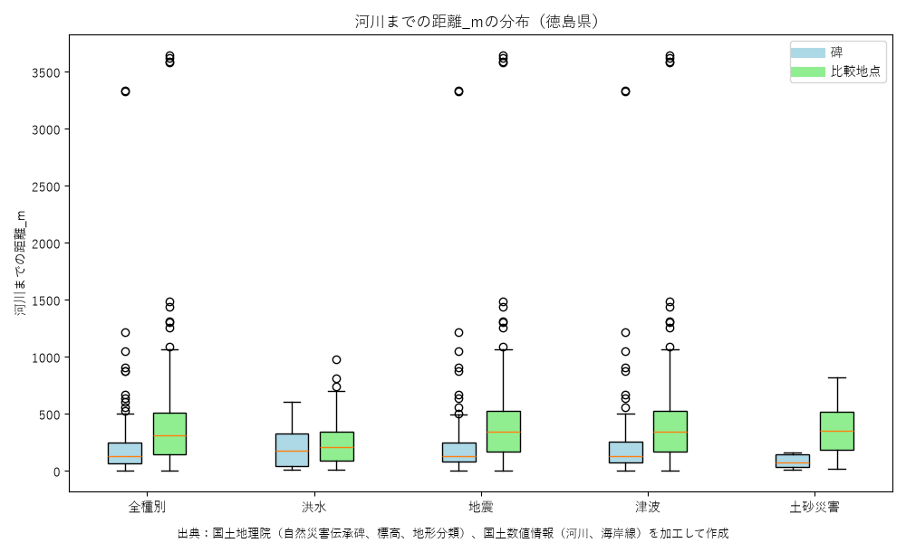
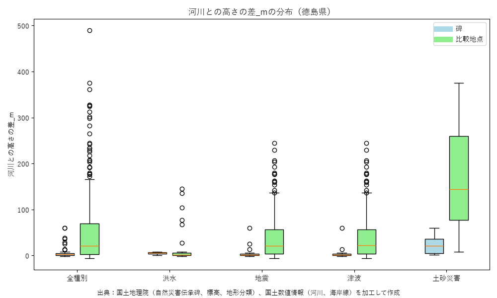
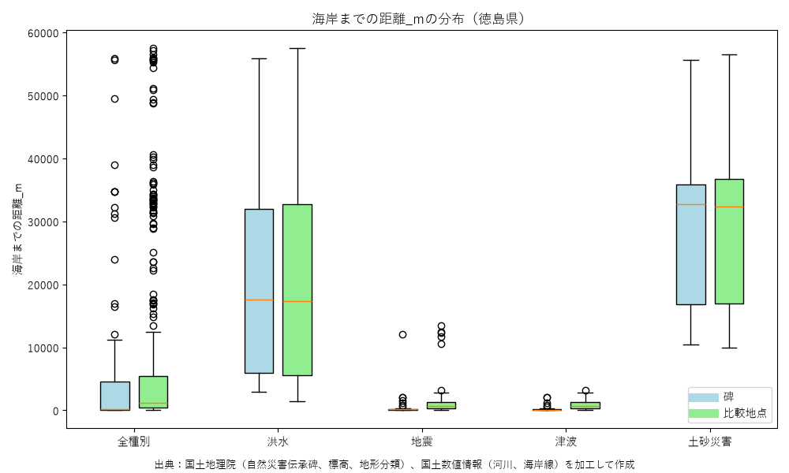
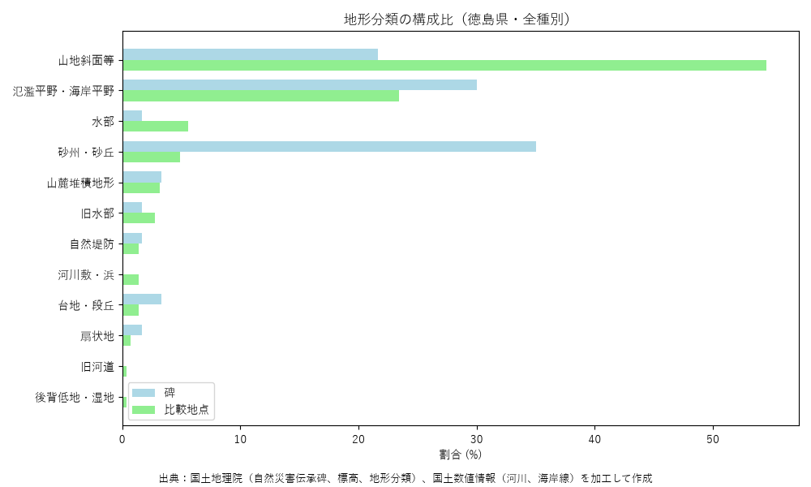

伝承碑データ取得日：2026-09-24 碑の数：71基 最終更新：2026-10-03
国土地理院の自然災害伝承碑に、碑ごとの地形（標高・傾斜・地形分類・河川や海岸との位置関係）を付け、碑のまわり（100m〜2,000m）の地点と比べた結果をまとめたものです。結果は地形との相関を示すもので、災害の予測・安全の保証ではありません。
| 指標 | 碑の中央値 | まわりの中央値 | 差の中央値 | 碑の方が大きい割合 |
|---|---|---|---|---|
| 標高(m) | 4.0 | 38.5 | -28.0 | 14% |
| 傾斜(度) | 4.9 | 23.8 | -16.25 | 17% |
| 河川までの距離(m) | 128.0 | 310.0 | -155.5 | 24% |
| 河川との高さの差(m) | 2.7 | 21.0 | -21.15 | 18% |
| 海岸までの距離(m) | 167.0 | 1184.0 | -326.0 | 21% |
移転碑を除いた集計や災害種別ごとの集計は、下の集計表（CSV）にあります。






| 更新日 | データ取得日 | 碑の数 | 追加 | 変更 | 削除 |
|---|---|---|---|---|---|
| 2026-10-03 | 2026-09-24 | 71 | 71 | 0 | 0 |